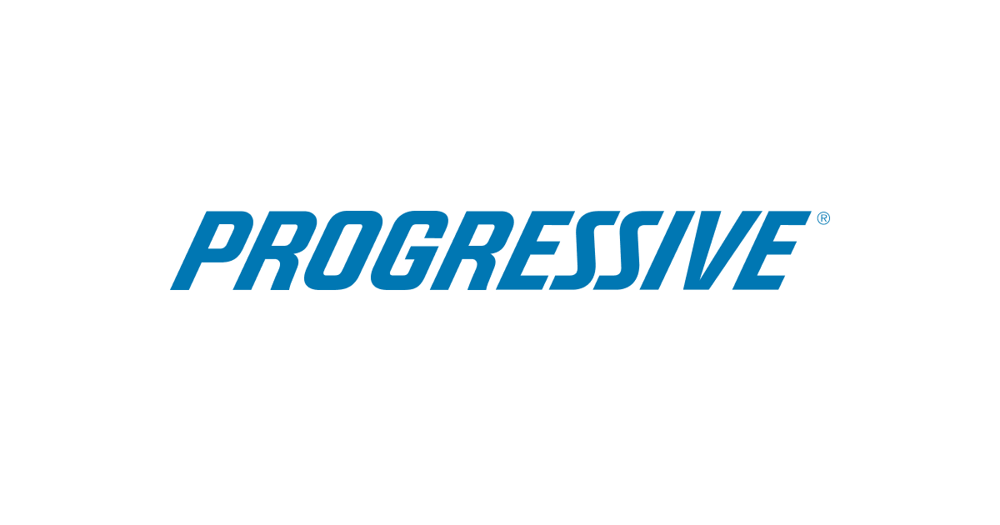

Trusted by Leading Organizations Worldwide


U.S. Navy


Israeli Knesset

Denver Public Schools

Why Your Hardest People Cost You 50% of Your Time—And What to Do About It

In every workplace, roughly 5% of people generate more than half of all complaints, grievances, and HR escalations. Not because they are having a bad month. Because they operate with a predictable, recognizable pattern that your current systems were never designed to handle.
Your best managers are spending their most valuable hours managing your most difficult people. The standard toolkit, open door policies, mediation sessions, performance improvement plans, assumes that everyone operates in good faith and can be reasoned with. High conflict personalities operate from a fundamentally different system. And until your leadership team can recognize the pattern, they will keep throwing rational solutions at irrational behavior.
Based on over two decades of clinical research and tens of thousands of case studies, the High Conflict Institute has identified four characteristics that define high conflict personalities. Once your audience learns to recognize these patterns, they will never unsee them.
They identify a "Target of Blame" and focus relentlessly on finding fault. The target is usually someone close to them or in a position of authority. They escalate through complaints, rumors, HR filings, or legal threats.
Everything is black and white with no gray area. People are either allies or enemies. Situations are either perfect or disasters. There is no capacity for nuance, complexity, or compromise.
Intense, unpredictable emotional outbursts that surprise colleagues. Fear, anger, yelling, disrespect that comes from nowhere. This creates a "walking on eggshells" environment that poisons team culture.
Actions that 90% of people would never take. Disproportionate responses to minor issues. Behavior that escalates rather than resolves conflict. These actions damage professional reputations and organizational culture.
Developed by Bill Eddy, LCSW, JD over two decades of clinical and legal practice, the BIFF Response is now taught in law schools, ombudsman offices, family court systems, and corporate HR departments worldwide. It is the only communication framework designed specifically for high conflict interactions. Your audience will learn and practice it during the keynote and walk out ready to use it the same afternoon.
This is not a motivational speech with a pitch at the end. It is a structured learning experience where your audience walks away with an immediately usable framework. In 50 minutes, they will learn to identify the pattern, understand why their current approaches fail, and gain a tool they can use the same afternoon.
Open with compelling data and a real story that makes the problem feel urgent, expensive, and personal. Every leader in the room will recognize their own version of the 5%.
Teach the four characteristics of high conflict personalities. This is the moment the audience says "that is exactly what I am dealing with."
Teach the BIFF Response method completely. The audience practices rewriting real hostile messages. They leave with a tool they can use before the day is over.
Paint the picture of a Conflict Smart organization. What changes when an entire leadership team can recognize and respond to high conflict behavior.
No hard sell. Three clear paths forward based on where each audience member is in their journey.
Your attendees have sat through conflict talks before. They have heard the advice about "having crucial conversations" and "assuming positive intent." They are still struggling with the same people on Monday morning. Here is why this one sticks.
Built on 20+ years of clinical and legal research with over 500,000 professionals trained globally. The BIFF method is taught at Pepperdine Law School and the University of Newcastle. This is not one person's philosophy. It is a validated framework.
Your audience practices the BIFF Response during the keynote. They do not just hear about it. They use it. Most conflict talks give theory. This one gives a tool that works before lunch.
When Megan describes the four patterns, something clicks for every leader in the room. They finally have a name for the behavior they have been trying to manage for years. That recognition alone changes how they approach their hardest people.
The invitation at the end offers free tools and optional next steps. Nothing is sold from the stage. Your attendees leave feeling served, not marketed to. That reflects well on you as the event organizer.
When organizations move from reactive conflict management to a proactive, skills based approach, the impact is measurable within months.
This keynote is designed for leadership and HR audiences who are actively managing the consequences of high conflict personalities, even if they do not have a name for the pattern yet.
SHRM state chapters, ASHHRA, IPMA-HR. HR professionals who spend their days managing the 5% and are hungry for a framework that actually works. This is the highest converting audience for HCI's approach.
Vistage, YPO, EO chapters. CEOs and executives who recognize the outsized impact of high conflict individuals on culture and bottom line. These leaders want tools, not theory.
ASHHRA, AONE, AASA. Sectors where conflict intensity is highest and the cost is most visible. Healthcare organizations see some of the highest conflict related turnover in any industry.
Annual meetings, leadership offsites, management summits. Organizations investing in their leaders' ability to handle their most challenging interpersonal dynamics with skill and confidence.
ABA, state bar associations, family law sections. Attorneys and mediators who encounter high conflict personalities in every case and need a structured communication approach.
IPMA-HR, municipal leadership groups. Public sector organizations where conflict management is complicated by civil service protections and political dynamics.

Megan Hunter co-founded the High Conflict Institute after spending 13 years in the family court system, including seven years as a Family Law and Child Support Specialist with the Arizona Supreme Court, where she led statewide policy and program development for high conflict family cases. That frontline experience, combined with her MBA and two decades of organizational research, makes her uniquely qualified to translate complex behavioral science into practical, actionable tools that leaders can use immediately.
She has trained professionals across healthcare, government, education, law, and corporate settings in the United States, Canada, Australia, New Zealand, the U.K., Israel, Italy, Scotland, and several PanAsian countries. Her client list includes Microsoft Global Employee Relations, Boston Children's Hospital, the U.S. Navy Hospital, the Scottish Parliament, the Israeli Knesset, Progressive Insurance, Duke Energy, and dozens of state bar associations, judicial conferences, and university programs worldwide. Her work with co-founder Bill Eddy, LCSW, JD has reached over 500,000 professionals and produced more than 20 published books on high conflict behavior.
She is the author of BIFF at Work (2021), The High Conflict Co-Parenting Survival Guide (2019), Dating Radar (2017), and Bait & Switch (2015), and serves as founder and publisher of Unhooked Books, a publishing house focused on conflict, human behavior, and interpersonal dynamics.
The frameworks taught in this keynote were developed by HCI co-founder Bill Eddy, who brings a rare combination of clinical social work (12+ years in psychiatric hospitals and outpatient clinics), family law practice (15+ years), and academic research (faculty at Pepperdine Law School and the University of Newcastle). His Psychology Today articles have been viewed over 4 million times. His book "5 Types of People Who Can Ruin Your Life" is the definitive guide to identifying and managing high conflict personalities. When Megan presents this material, she is drawing on one of the deepest bodies of research in the field.
The frameworks in this keynote are backed by an extensive body of published research and practical guides used by professionals worldwide.
Whether you need a high impact keynote, a deep dive workshop, or a virtual session, Megan tailors the content to your audience, industry, and event format.
The full 5% Problem experience. Data, pattern recognition, BIFF practice, and three clear paths forward. Perfect for conference main stages and annual meeting general sessions.
Everything in the keynote plus extended BIFF practice, case study analysis, and team exercises. Your leaders leave with deeper skill and confidence. Ideal for leadership offsites.
Adapted for remote delivery with interactive polls, breakout exercises, and digital BIFF templates. The same high engagement experience, designed specifically for virtual platforms.
Give your audience tools they will use the same afternoon. No fluff, no pitch, just a framework that changes how leaders handle their hardest people.
Book Megan for Your Event or email megan@highconflictinstitute.com